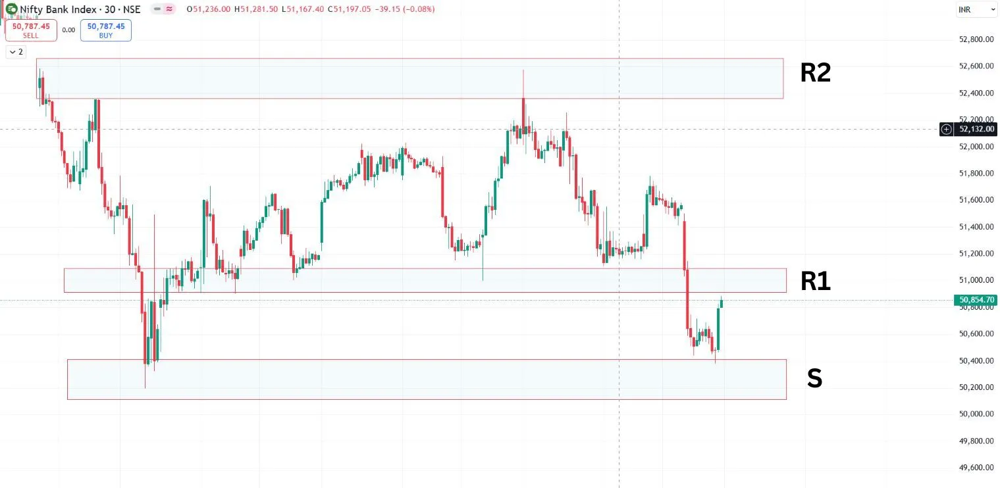
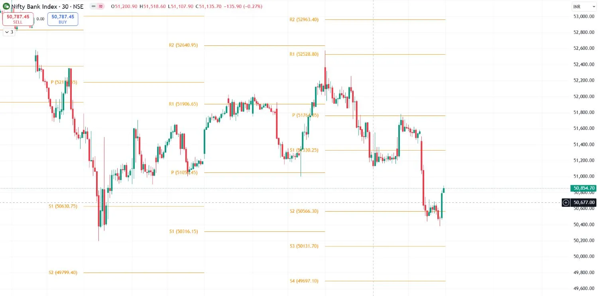
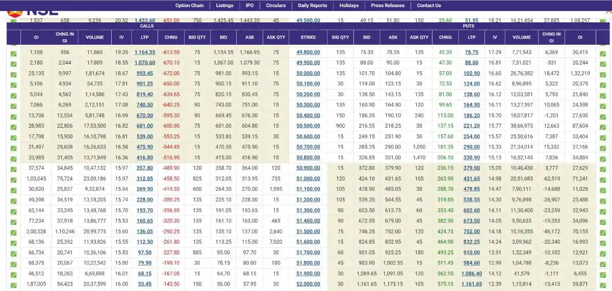
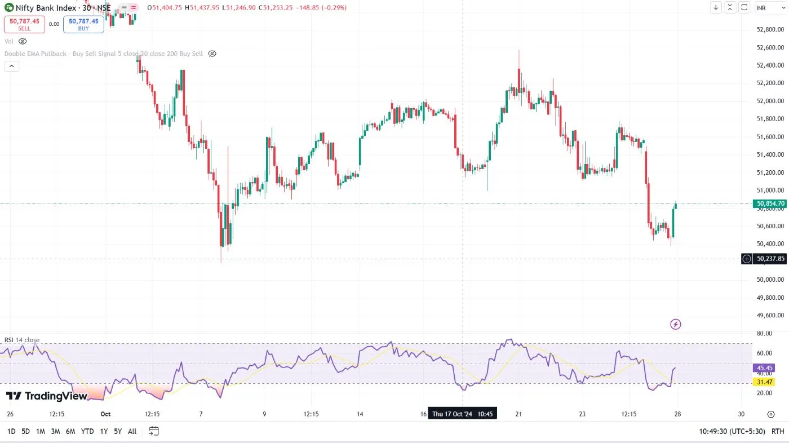
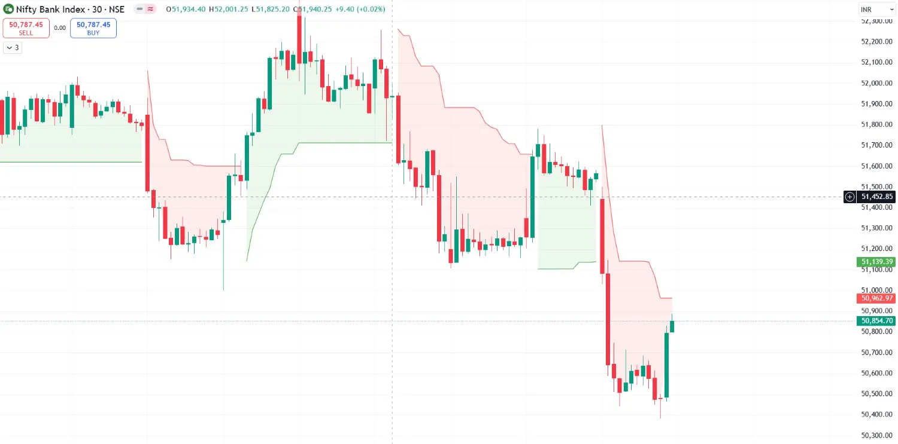
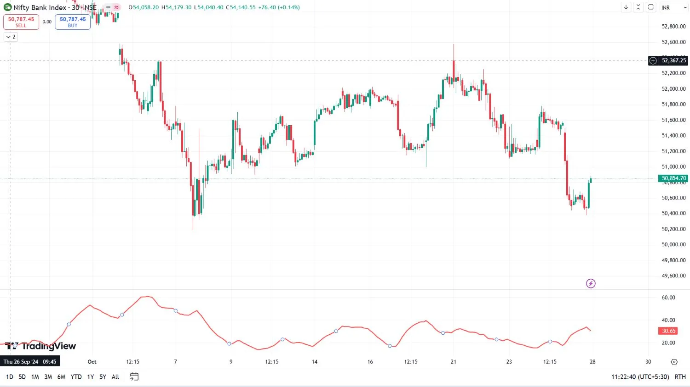
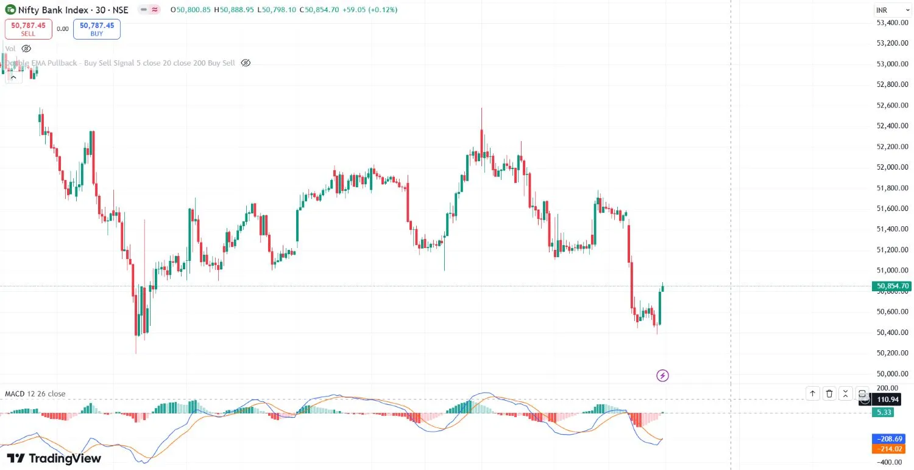
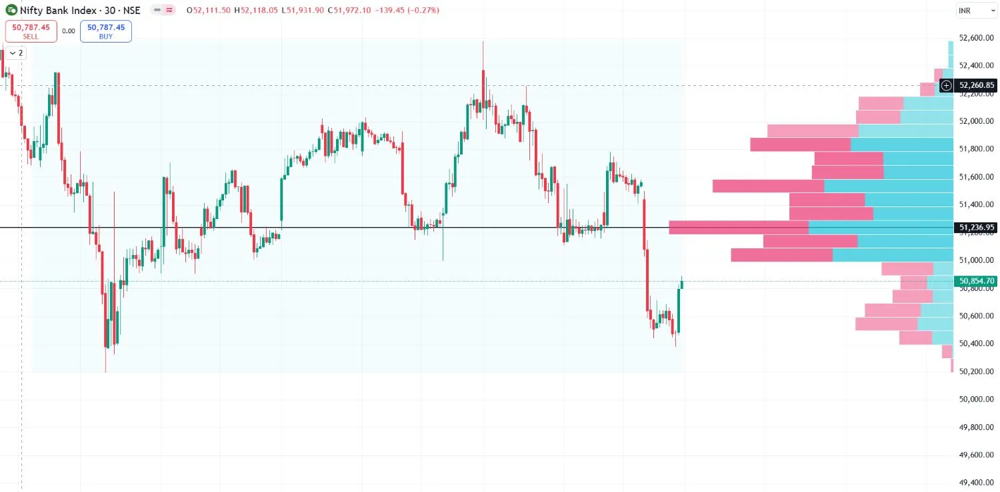
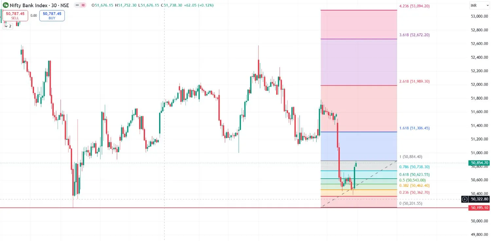

Table of Content
- Support and Resistance
- Relative Strength Index (RSI)
- Supertrend
- Average Directional Index (ADX)
- Moving Average Convergence Divergence (MACD)
- Anchored Volume Profile
- Fibonacci retracement indicator
- Conclusion
- Frequently Asked Questions
How to analysis banknifty in India
Banknifty consists of 12 best banks in India. Every trader uses different technical analysis or other analysis to trade in this Bank Nifty. We will learn about some important analytics that must be known before trading in Banknifty. Let's learn about banknifty analytics.
Support and Resistance:
Support is an area from which the market starts to move up again and the resistance is the area from where the market starts to go down again. Identifying a support area requires seeing that the market has previously moved up from there. And same as resistance. We can identify the support and resistance area in three ways i) manual draw ii) pivot point iii) option chain.
Manual draw:

One thing to remember is that when price breaks the support and comes down, the support will act as resistance and similarly when price breaks the resistance and moves upwards, the resistance acts as support. For example, here R1 is the first resistance area, R2 is the second resistance area and S is the support area.
Pivot point:

Pivot point is an indicator or software tool that helps to identify support and resistance area by itself. The first support here is 51330, the second support is 50566 and the third support is 50131. The first resistance here is 52528 and the second resistance is 52963.
Option chain:

We can identify resistance & support by looking at NSE's option chain. In OTM, where volume or number of OI is high, there is more possibility of support or resistance. For example option chain has highest oi and volume at 51000 and 51500 so it can act as resistance and similarly option chain has maximum oi and volume of 50700 and 50500 so it can act as support area banknifty.
Relative Strength Index (RSI):

Relative Strength Index indicator is used to see whether the market is oversold or overbought. Relative Strength Index values below 30 are considered market oversold and above 70 are considered market overbought. But since the RSI value is 45 here, it cannot be considered that the market will go up or down. So, at this time the market can go in any direction.
Supertrend:

Super trend is used to see whether a stock or index is trending up or down. When the candlestick crosses the line in green, a stock or index is considered to be in a downtrend and when the stock or index candlestick crosses the line in red color from down, an index or stock is considered to be in an uptrend. Now bank nifty is moving in down trend as the candle crossed the green line and moved down and has not gone up yet.
Average Directional Index (ADX):

To understand how strong the trend is, the ADX is viewed. If the Average Directional Index is above 28, we can see it as a strong trend. The higher the average directional index value, the stronger the up or down trend. Now ADX is 30, so now this trend can be considered as mild strong trend. If the value of ADX was now 70 or 80 then this trend could be considered as a stronger trend.
Moving Average Convergence Divergence (MACD):

The Moving Average Convergence Divergence indicator is used to understand whether the uptrend or downtrend has changed and many traders use it as a buy and sell indicator. The green bars indicate that it is in an uptrend and the red bars indicate that it is in a down trend and if the bars are light red or light green, then it should be understood that the trend is about to change.
Another way uptrend and downtrend can be understood is when the blue line crosses the red line from above then the downtrend starts and when the blue line crosses the red line from below then the stock or index uptrend starts. Now MACD has formed a green bar which means now uptrend has started.
Anchored Volume Profile:

Anchored volume profiles show where buyers and sellers are most interested. Buyers and sellers are most active where bars are largest. This place can act as support and resistance. If the price is down then it acts as resistance and if up it acts as support. For example here the largest bar is 51290 to 51190 and this place is now acting as resistance.
Fibonacci retracement indicator:

Fibonacci retracement indicator can be used in two ways, one is for profit booking and the other is to understand how far the price can go. Here we will try to understand how far price can go in 1-2 days. Here price is likely to go up to 51309 in 1-2 days.
Conclusion
Before treading banknifty it is very necessary to analyze by these indicators like Relative Strength Index, Pivot point, Super trend, Average Directional Index, MACD, Anchored Volume Profile, Fibonacci retracement and others indicators but we have to remember that indicators only indicate but do not guarantee anything. So, consult a financial advisor before investing anything and also check our Disclaimer page.
Frequently Asked Questions
What is the best indicator for bank Nifty?
There are several best indicator to analysis banknifty like Supertrend, ADX, MACD, Anchored Volume Profile and Pivot point.
How to read banknifty chart?
To read a Bank Nifty chart analysis candlestick patterns and chart patterns, price trends, support and resistance. Use important indicators like Anchored Volume Profile, Pivot point, MACD to identify buy or sell signals.